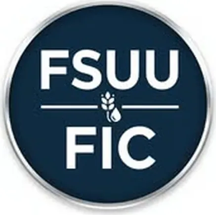

FSUU Food Innovation Center (Caraga FIC)
Father Saturnino Urios University (FSUU) · Region XIII
The FSUU Food Innovation Center is the Food Innovation Center (FIC) of Father Saturnino Urios University (FSUU) in Butuan City, Agusan del Norte — the newest member of the Caraga Food Innovation Consortium (CFIC), operating in coordination with DOST-Caraga. As one of the DOST-designated FICs in the country, the FSUU FIC provides food processing and product development services to MSMEs across the Caraga region, complementing the other members of the Caraga FIC network.
- Category
- Food Innovation Center
- Host institution
- Father Saturnino Urios University (FSUU)
- City
- Butuan City, Agusan del Norte
- Region
- Region XIII
- Operating status
- Operating
About the Center
Father Saturnino Urios University is one of Caraga's leading private universities with strong programs in hospitality management and the food and culinary arts, giving the FIC a ready base of food industry expertise and infrastructure. The FIC supports local food entrepreneurs, producers, and agri-MSMEs seeking to develop, process, and commercialize food products to regulatory and market standards.
Programs & Services
- Food Product Development — Technical assistance for food MSMEs and entrepreneurs developing new food products, improving formulations, and creating value-added products from local Caraga ingredients
- Food Processing Equipment Access — DOST FIC standard processing equipment including spray dryer, freeze dryer, water retort, and vacuum fryer for product development and small-batch production
- Food Safety & Quality Testing — Laboratory analysis for food safety parameters supporting FDA registration and market compliance
- FDA Registration Support — Guidance on documentation, labeling, and compliance requirements for Philippine FDA food product registration
- Packaging & Nutrition Labeling — Advisory services on packaging design, nutrition labeling, and product presentation for market competitiveness
- Product Costing & Market Analysis — Assistance with production cost analysis, pricing strategy, and market feasibility assessment for food enterprises
- Training & Capacity Building — Workshops and seminars for Caraga food entrepreneurs on food safety, GMP, and product commercialization
- DOST-Caraga Ecosystem Connection — Integration with the Caraga Food Innovation Consortium (CFIC) and DOST-Caraga programs for regional food innovation and MSME support
Contact
Sources & references
- pia.gov.ph/news/dost-establishes-food-innovation-centers-to-bolster-caraga-…
- caraga.dost.gov.ph/dost-caraga-sucs-launch-operationalization-of-caraga-foo…
Details are drawn from public records and the sources above, July 2026.
Startupreneur Innovation Hub · synced from the Notion catalog (July 2026) · status: published.